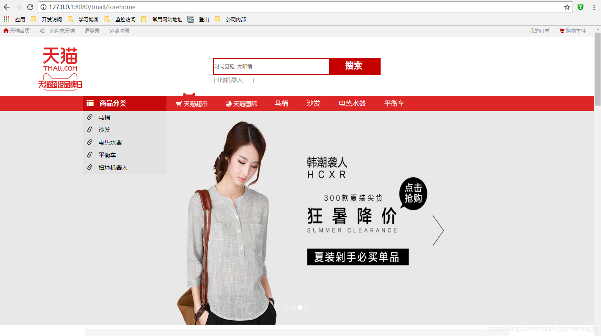

因为天猫这样的项目需要很多servlet处理具体种类的业务，比如后台的管理页面有增删改查，订单页面也有增删改查，每一个操作都需要写一个servlet。使用filter+反射可以解决这个冗余的问题。
举个例子，我们本地天猫项目的首页地址为http://127.0.0.1:8080/tmall/forehome，tmall此处是项目名，我们在web.xml设置filter拦截所有请求，url-pattern设置的/*，所有请求都会映射到tmall.filter.ForeServletFilter这个Java类。
<filter>
<filter-name>ForeServletFilter</filter-name>
<filter-class>tmall.filter.ForeServletFilter</filter- class>
</filter>
<filter-mapping>
<filter-name>ForeServletFilter</filter-name>
<url-pattern>/*</url-pattern>
</filter-mapping>在filter的doFilter方法里面判断请求，如是/fore开头的，跳转到前台对应的servlet再做具体逻辑数据处理。
@WebFilter(filterName = "ForeServletFilter")
public class ForeServletFilter implements Filter {
@Override
public void destroy() {
}
@Override
public void doFilter(ServletRequest req, ServletResponse resp, FilterChain chain) throws ServletException, IOException {
HttpServletRequest request = (HttpServletRequest) req;
HttpServletResponse response = (HttpServletResponse) resp;
//获取从项目名开始的路径
String uri = request.getRequestURI();
//获取项目名路径
String contextPath = request.getContextPath();
//获得路径后缀
String path = StringUtils.remove(uri, contextPath);
if(path.startsWith("/fore")&&!path.startsWith("/foreServlet")) {
//需要将方法名取出并且放到session里面
String method = StringUtils.substringAfterLast(path, "fore");
request.setAttribute("method", method);
//跳转向foreServlet
request.getRequestDispatcher("/foreServlet").forward(request, response);
return;
}
chain.doFilter(request, response);
}
@Override
public void init(FilterConfig config) throws ServletException {
}
}web.xml设置servlet映射，跳转后来到ForeServlet这个Java类。
<servlet>
<servlet-name>ForeServlet</servlet-name>
<servlet-class>tmall.servlet.ForeServlet</servlet-class>
</servlet>
<servlet-mapping>
<servlet-name>ForeServlet</servlet-name>
<url-pattern>/foreServlet</url-pattern>
</servlet-mapping>这里我们只写具体方法而不写service方法，让它继承其父类BaseForeServlet的service方法。这里的具体方法就包括了前面所说的各种后台的管理页面和订单页面的增删改查方法，此处举个首页的例子，定义一个home()方法：
public class ForeServlet extends BaseForeServlet {
public String home(HttpServletRequest request, HttpServletResponse response, Page page) {
List<Category> cs = categoryDAO.list(page.getStart(), page.getCount());
//填充数据
request.setAttribute("cs", cs);
new ProductDAO().fill(cs);
new ProductDAO().fillByRow(cs);
return "home.jsp";
}
}那么是如何调用到这个子类servlet的home()方法的呢？
这里我们通过BaseForeServlet的service方法，首先截取路径里面的方法名，然后使用反射执行子类的home()方法，将数据填充好。
@WebServlet(name = "BaseForeServlet")
public abstract class BaseForeServlet extends HttpServlet {
protected CategoryDAO categoryDAO = new CategoryDAO();
protected OrderDAO orderDAO = new OrderDAO();
protected OrderItemDAO orderItemDAO = new OrderItemDAO();
protected ProductDAO productDAO = new ProductDAO();
protected ProductImageDAO productImageDAO = new ProductImageDAO();
protected PropertyDAO propertyDAO = new PropertyDAO();
protected PropertyValueDAO propertyValueDAO = new PropertyValueDAO();
protected ReviewDAO reviewDAO = new ReviewDAO();
protected UserDAO userDAO = new UserDAO();
protected void service(HttpServletRequest req, HttpServletResponse resp) throws ServletException, IOException {
String method = (String)req.getAttribute("method");
Method md = null;
Page page = new Page(1, 5);
try {
md = this.getClass().getMethod(method, javax.servlet.http.HttpServletRequest.class,
javax.servlet.http.HttpServletResponse.class, Page.class);
String redirect = md.invoke(this, req, resp, page).toString();
if (redirect.startsWith("@")) {
resp.sendRedirect(redirect);
}else if (redirect.startsWith("%")) {
resp.sendRedirect(redirect);
}else {
req.getRequestDispatcher(redirect).forward(req, resp);
}
} catch (NoSuchMethodException e) {
e.printStackTrace();
} catch (IllegalAccessException e) {
e.printStackTrace();
} catch (InvocationTargetException e) {
e.printStackTrace();
}
}
}foreServlet返回home.jsp到父类，父类判断路径前缀，然后跳转到对应的页面。
String redirect = md.invoke(this, req, resp, page).toString();
if (redirect.startsWith("@")) {
resp.sendRedirect(redirect);
}else if (redirect.startsWith("%")) {
resp.sendRedirect(redirect);
}else {
req.getRequestDispatcher(redirect).forward(req, resp);
}
本项目我们还暗含了MVC的设计模式，Model是Dao、Bean等数据，View是jsp页面，Control是servlet。因为篇幅有限，很多内容都没有展示，具体项目详见网上一个大神的项目：天猫J2EE项目